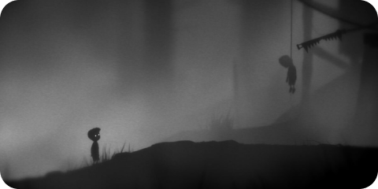
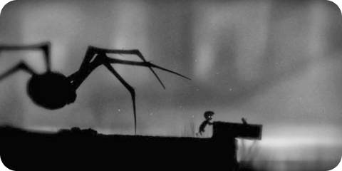
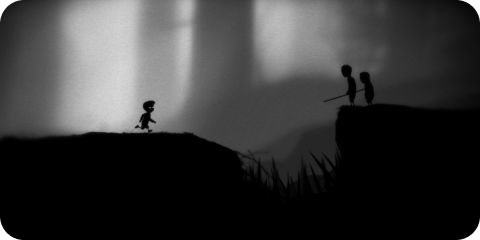

"Limbo" é um jogo de plataforma e quebra-cabeças desenvolvido pela Playdead. Ele cativa os jogadores com sua estética minimalista e atmosfera sombria. No jogo, os jogadores assumem o papel de um jovem garoto em busca de sua irmã em um mundo sombrio e misterioso.
O jogo se destaca por sua narrativa sutil e pela ausência de diálogos, permitindo que os jogadores interpretem a história por conta própria.
A jogabilidade de "Limbo" é focada em quebra-cabeças desafiadores e plataforma precisa. Os jogadores enfrentam obstáculos mortais, armadilhas engenhosas e enigmas intrigantes enquanto exploram o mundo sombrio do jogo. A morte é uma parte concluída da experiência, e a resolução de quebra-cabeças muitas vezes exige tentativa e erro.
A atmosfera única de "Limbo" é amplificada por sua trilha sonora minimalista e pelos visuais em preto e branco, criando uma sensação de isolamento e tensão constante. O jogo recebeu aclamação da crítica por sua abordagem artística e design de níveis inteligentes, tornando-se um título cult no mundo dos jogos independentes.
"Limbo" oferece uma experiência de jogo envolvente que significa desafiar os jogadores a explorar sua própria história e superar desafios intrigantes em um mundo sombrio e misterioso.
Informações adicionais:
Data de lançamento: 21 jul, 2010
Developer: Double Eleven.
Editora: Playdead.
Marcadores do jogo: Aventura, Plataformas e Suspense, 2D